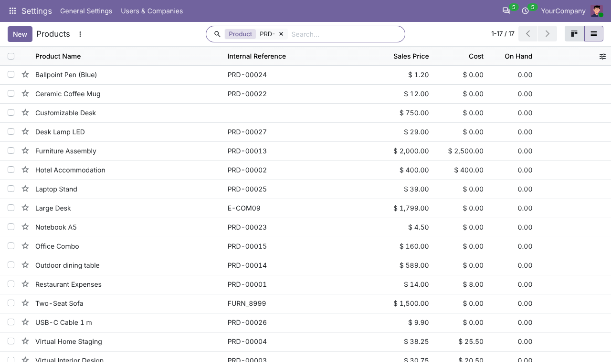
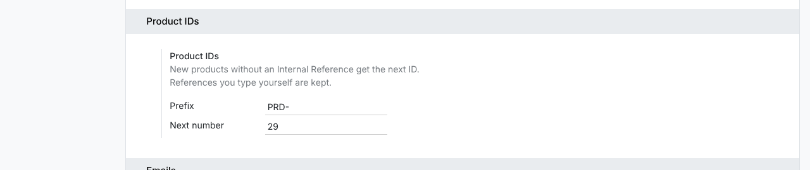

Give every product a permanent ID, such as PRD-00001, with a prefix you choose.
New products and new variants get the next ID in the standard Internal Reference field. Existing products without a reference get one when you install the app.
A reference you type is never replaced, and each variant gets its own ID.
Change the prefix (for example PRD- to SKU-) and the next number in Settings.
Products created without an Internal Reference get the next ID. References you type yourself are kept.

Go to Settings > General Settings > Product IDs to set the prefix and the next number.
